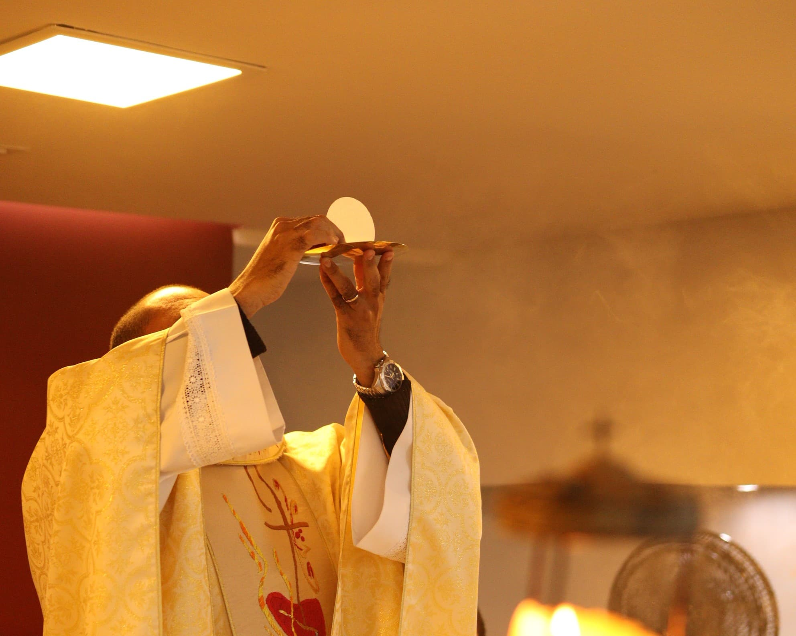
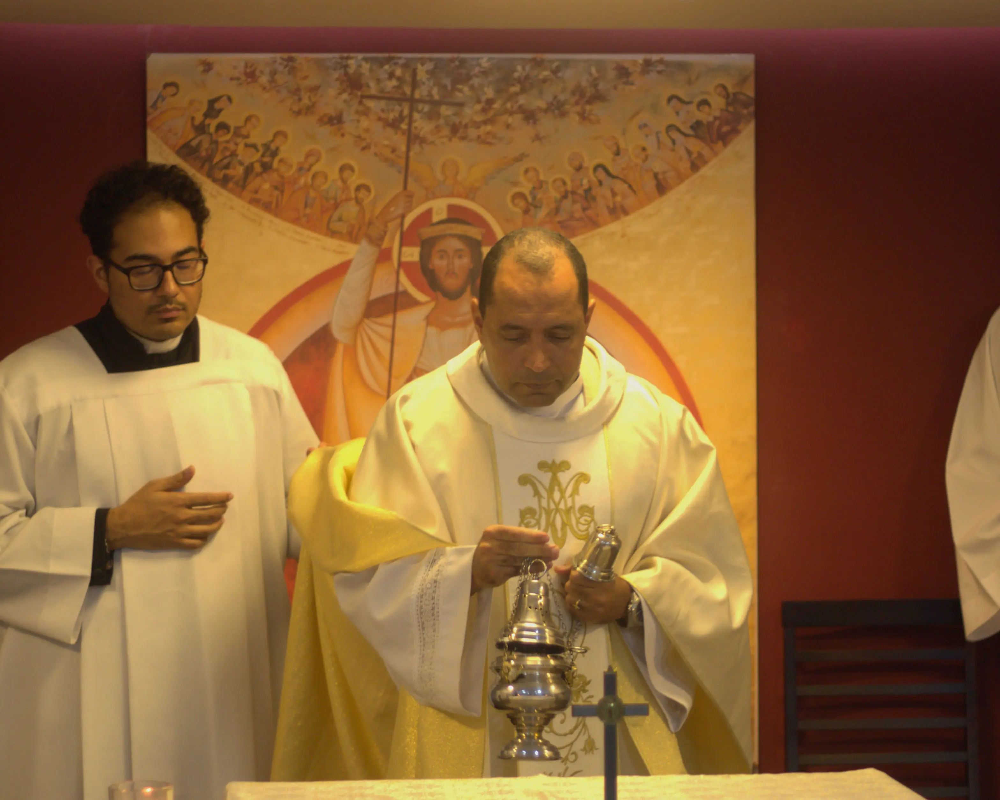
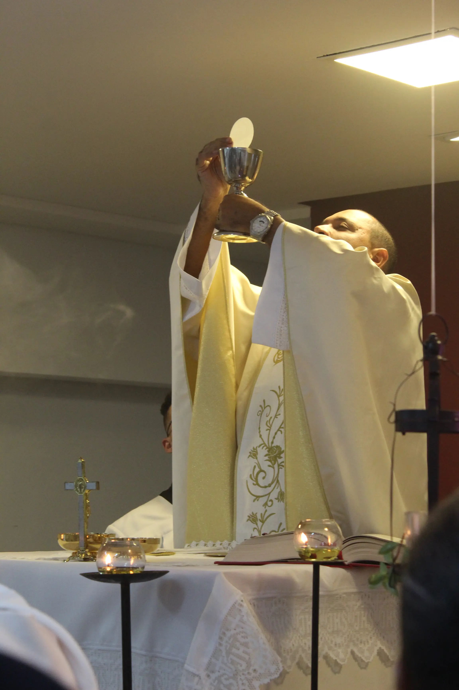
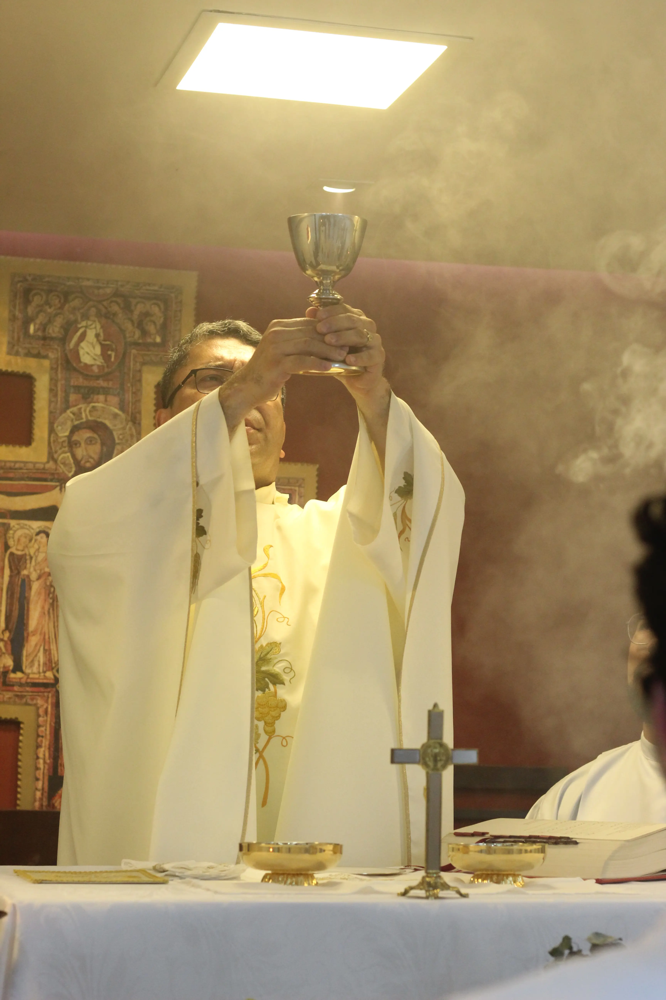
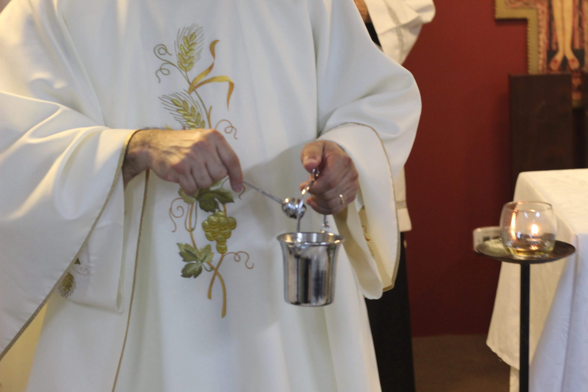

Vai e
reconstrói
a minha igreja
Inspirados pelo chamado feito a São Francisco, queremos oferecer o melhor ao Senhor e cuidar do Sagrado confiado à missão.

"Vai e reconstroi a Minha Igreja"
- Palavra do Senhor a São Francisco de Assis.
A Missão
Fundada em 1982, a Comunidade Católica Shalom é uma Associação Privada de Fiéis reconhecida pelo Vaticano desde 2007. Presente em São Paulo há quase 22 anos, nossa missão é ser um lugar de encontro com Deus, promovendo a evangelização e a formação de discípulos.
O Carisma
Nosso carisma nasceu da oferta de vida de Moysés Azevedo, nosso fundador, diante de Jesus Eucarístico. Toda a nossa obra de evangelização brota dessa fonte inesgotável. Cremos que o altar é onde o Céu toca a terra; por isso, cuidar da liturgia é zelar pelo coração da nossa vocação.
A Campanha
Inspirados pelo chamado feito a São Francisco para 'reconstruir a Igreja', e celebrando nosso aniversário em São Paulo, queremos renovar nossos objetos litúrgicos. Cada item é um instrumento de evangelização. Participe desta obra e ajude-nos a oferecer com dignidade o nosso melhor ao Senhor.




Presenteie a Missão de São Paulo!
Neste aniversário da missão, você pode participar oferecendo um presente que servirá diretamente à liturgia e à evangelização desta cidade. Escolha um dos itens abaixo e ajude-nos a cuidar do Sagrado. Deus abençoe!
Progresso da Campanha
Cada centavo pode nos ajudar! Acompanhe o quanto já arrecadamos para a renovação dos nossos objetos litúrgicos.
*Os valores são atualizados toda quinta-feira.